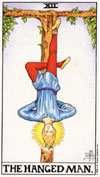
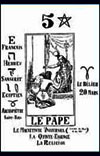
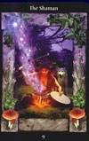
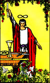
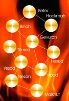

Tarot Visconti-Sforza: Es una de las barajas mejor conservadas gracias al
mecenazgo de los Visconti-Sforza, y una de las más antiguas que se han
hallado. Es un tarot moderno para su época, aunque con algún elemento
antiguo salteado.
Tarot De Marseilles

Tarot de Papus (Tarot de los bohemios): En 1889 Gerard Encausse, conocido
por el sobrenombre de Papus, público el tarot de los bohemios, más conocido
por tarot del Papus. Encausse, que estudió medicina y extendió el ocultismo
por Europa, creó un tarot de estilo egipcio y que alcanzó gran popularidad.

Tarot Céltico: El tarot de Alan Borvo es el que se conoce como tarot
céltico. Tiene 72 láminas de las cuales 18 son mayores. Las cartas tienen
relación con el año céltico y es bastante diferente del tarot de Marsella.

Tarot de Waite: Tarot que proviene del siglo XVIII, y que fue desarrollado
por este admirador de Levi y Papus y estudioso de la Cábala. Reinventó el
estilo del tarot de Marsella y le adaptó elementos nuevos, como por ejemplo
eliminando las letras hebreas. Este tarot, que fue pintado por Pamela
Colman, fue muy bien acogido sobre todo en América. Se publicó en Londres,
en 1910, por parte de la editorial Rider, cayendo paulatinamente en el
olvido, hasta que la hija de Rider Waite vendió los derechos de
reproducción de los dibujos originales en 1971 a la casa U.S. Games. Este
fue el inicio de un éxito avasallador, expandiéndose su uso por el mundo y
haciéndose tan popular como el tarot de Marsella. Una peculiaridad de este ...
tarot es que los arcanos menores son aquí tan relevantes como los mayores.
 Tarot de Aleister Crowley: Lady Frieda Harris, mujer del parlamentario
británico Sir Harris, pintó en acuarela entre 1938 y 1942 el tarot de
Aleister Crowley. Se publico en blanco y negro en 1944, no siendo hasta
1969 cuando aparece en dos colores, siempre con un estilo surrealista
abstracto. Ya en 1977 fue publicado a todo color pero sus autores ya habían
fallecido, no llegándolo a ver. El tarot lleva el nombre de Aleister
Crowley, excéntrico poeta británico, amante de las ciencias ocultas y
creador de varias sectas, muy amigo de Lady Harris, a la que conoció en
1937, y con la que creó dicho tarot, con imágenes muy detalladas y llenas
de fantasía.
Tarot de Aleister Crowley: Lady Frieda Harris, mujer del parlamentario
británico Sir Harris, pintó en acuarela entre 1938 y 1942 el tarot de
Aleister Crowley. Se publico en blanco y negro en 1944, no siendo hasta
1969 cuando aparece en dos colores, siempre con un estilo surrealista
abstracto. Ya en 1977 fue publicado a todo color pero sus autores ya habían
fallecido, no llegándolo a ver. El tarot lleva el nombre de Aleister
Crowley, excéntrico poeta británico, amante de las ciencias ocultas y
creador de varias sectas, muy amigo de Lady Harris, a la que conoció en
1937, y con la que creó dicho tarot, con imágenes muy detalladas y llenas
de fantasía.

Tarot Kabala: Este tarot tiene la particularidad de que pretende adivinar
el futuro, como los demás tarots, pero no el inmediato, sino el que vendrá
a largo plazo. Se basa en la gnosis difundida por Samael Aun Weor, y tiene
muchos rasgos del tarot egipcio. Aunque en sus comienzos fue considerado
más elitista, al alcance de unos pocos, como muchos gnósticos han ido
aplicándole sus estudios y normas, en la actualidad se le considera algo
más corriente.